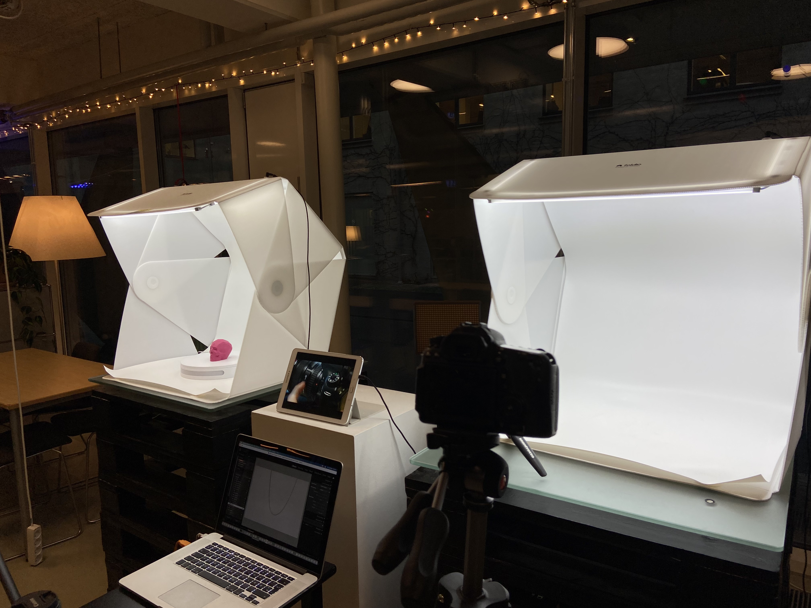
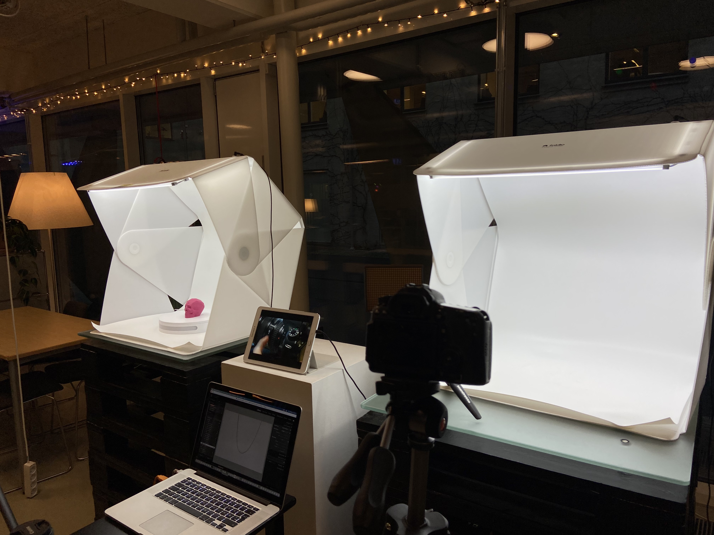

MULTIMEDIEDESIGNER PÅ KEA
Hvordan er det at studere til multimediedesigner på KEA?
I videoen nedenfor fortæller Mathilde Kramer, som læser til multimediedesigner på KEA,
hvad hendes passion for uddannelsen er og hvordan hun udfolder sin interesse igennem sin uddannelse.

 

Pilotvideo produceret af:
Mathilde Dollas & Mathilde Kramer